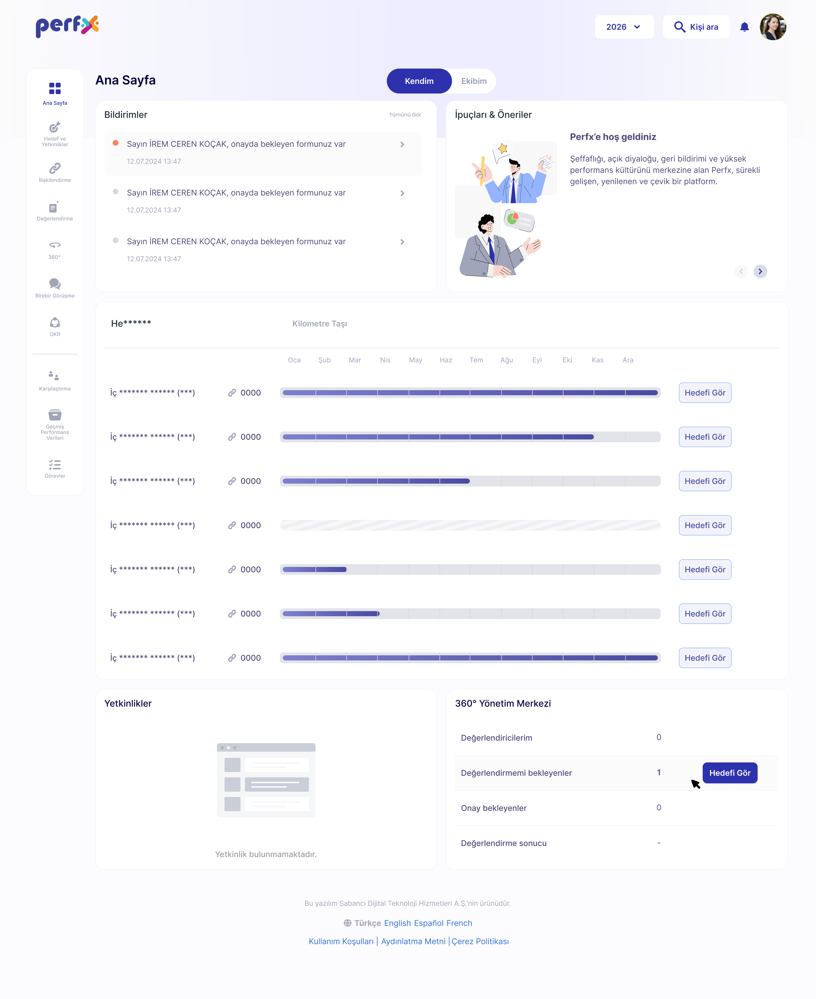

Perfx Web Site
Web sitesinin yeniden tasarım sürecini inceleyebileceğiniz, kullanıcı deneyimi gözlemleri ve dönüşüm odaklı çözümleri içeren çalışma.
AI ExperienceDesign SystemProduct DesignUX/UI DesignB2B SaaS
Ürün Hakkında
Perfx; çalışan hedefleri, performans değerlendirmeleri, geri bildirim ve gelişim planlarını tek platformda bir araya getiren organizasyonel performans ürünüdür.
